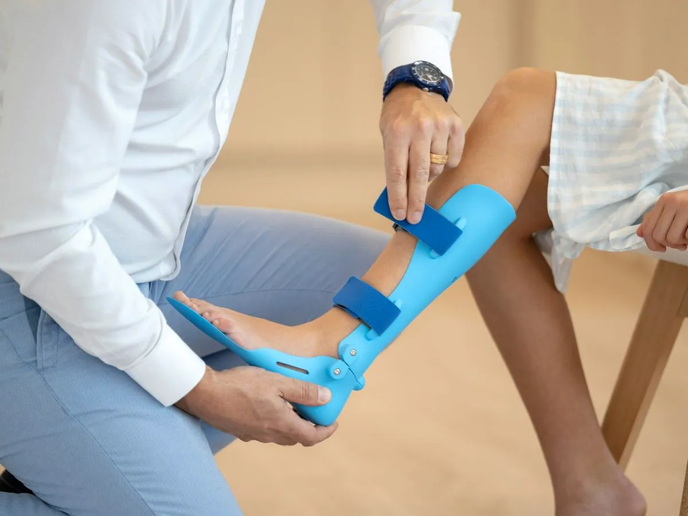

Door A · When something new can’t wait
Urgent care
For a new problem that needs looking at today and isn’t an emergency.
If it might be an emergency, call 911.
Don’t wait for an urgent care visit, and don’t drive yourself if you feel unwell. For a mental health crisis, call or text 988.
Is this your door?
Something new has come up, it can’t wait for a routine appointment, and it isn’t an emergency. If you’re unsure which, call first and ask.

Walk in or book ahead
Three stops, start to finish
- At the desk
We check that this location can see your concern today before you wait for a room.
- In the room
A clinician looks at the problem and explains what they think and what happens next.
- On the way out
You’re told who will call about any pending results, and when to get help again.
Bring with you
- Your medication list and allergies
- Any recent test results or papers from other care
- Your regular clinician’s name, if you have one
People ask
QDoes urgent care replace a regular doctor?
No. Urgent care deals with today’s problem; a regular care team looks after the bigger picture. Ask for the visit notes to go to your regular team, and whether they need to see you afterwards.
After today: your regular team
You have a regular doctor
Ask for the visit notes to go to them, and whether they need to see you afterwards.
You don’t have one yet
Door B is a regular care team that can pick up where today’s visit leaves off.
Door B – Primary careOther doors
Not the right door?
Plan a visit
Four taps to a visit plan.
Pick the door, the place, a time that suits and one thing the team should know. You’ll see who reads it and what happens next. Nothing is sent.
Plan a sample visit